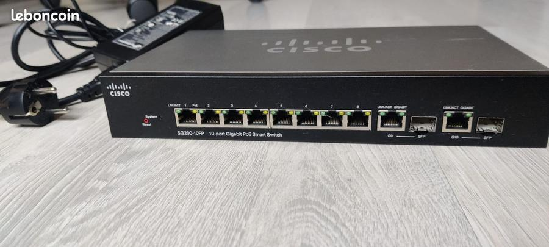
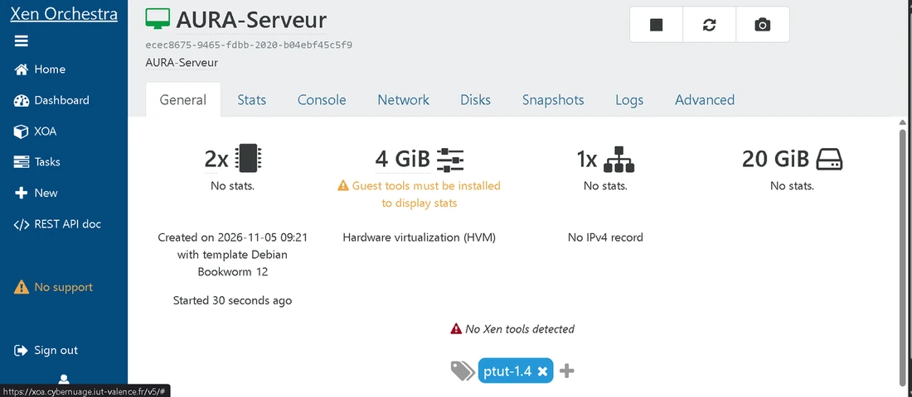

Sans agent sur les postes
Rien à installer sur les ordinateurs. AURA observe le réseau et les ondes depuis l’extérieur des machines.
Lecture honnête
Plusieurs outils savent déjà faire une partie du travail. Voici, honnêtement, ce qu’AURA apporte par rapport à eux, pourquoi nous faisons ces choix, et sur quel matériel il repose.
Les cases « En cours » et « Objectif » signalent ce qui n’est pas encore en place. Nous préférons l’annoncer plutôt que de le survendre.
| Critère | NetAlertX seul | Scan Wi-Fi ponctuel | NAC commercial | AURA |
|---|---|---|---|---|
| Réseau filaire | Oui | Non | Oui | Oui |
| Écoute Wi-Fi | Non | Ponctuel | Parfois | Oui |
| Corrélation ondes / réseau | Non | Non | Oui | En cours |
| Localisation sur le port de switch | Non | Non | Oui | Objectif |
| Sans agent sur les postes | Oui | Oui | Souvent non | Oui |
| Logiciel libre | Oui | Variable | Non | Oui |
| Coût | Faible | Faible | Élevé | Matériel seul |
Lecture honnête d’étudiants : un NAC commercial fait déjà beaucoup, mais au prix d’agents sur les postes et d’une licence. AURA vise la corrélation ondes/réseau, en logiciel libre et sans agent.
Ce ne sont pas des promesses commerciales, mais les partis pris qui guident notre projet.
Rien à installer sur les ordinateurs. AURA observe le réseau et les ondes depuis l’extérieur des machines.
La plupart des outils voient l’un ou l’autre. AURA rapproche les deux pour donner du sens aux indices.
NetAlertX, Kismet, Netdisco : des briques éprouvées, chacune avec sa licence, que nous assemblons.
Les observations restent chez vous, sur votre serveur. Seule l’explication d’alerte peut passer par une IA externe.
Chaque alerte montre la règle qui l’a déclenchée et les indices. La gravité est calculée, pas devinée.
Un projet d’étudiants, assumé comme tel : objectifs, limites et code sont écrits noir sur blanc.
Du matériel accessible, et des rôles séparés : le Raspberry Pi écoute, le serveur rassemble les observations.

Kismet écoute les trames de gestion. AURA lit son API REST, sans installer d'agent sur les postes.

Ralink RT3070, mode monitor et antenne externe. Capture en 2,4 GHz uniquement.

Localiser un appareil par la table MAC en SNMP : un objectif à venir, pas encore une fonction disponible.

NetAlertX et AURA Core dans une VM, sur XCP-ng et Xen Orchestra.
Des logiciels libres, leurs API et notre moteur de corrélation. Chaque brique conserve sa licence.
Surveillance du réseau filaire.
GPL 3.0Écoute Wi-Fi, utilisé par son API comme programme séparé.
GPL 2.0Source d'inspiration pour la lecture SNMP à venir.
BSD 3 clausesBrique envisagée pour le graphe réseau du dashboard.
ISCNous ne partons pas de zéro. Voici les projets libres que nous étudions, utilisons ou dont nous reprenons les idées — avec un lien vers leur code.
Le socle de la surveillance filaire. Nous le prolongeons par des plugins, sans le réécrire.
Voir le dépôt github.com/kismetwirelessL’écoute Wi-Fi sur la sonde. Nous lisons son API REST comme un programme séparé.
Voir le dépôt github.com/netdiscoLa lecture SNMP des switchs. Source d’inspiration pour retrouver le port d’un appareil.
Voir le dépôt github.com/merbananDécodage de signaux radio 433/868 MHz en réception seule. Piste « si nous avons le temps ».
Voir le dépôt github.com/d3La brique envisagée pour dessiner le graphe réseau du tableau de bord.
Voir le dépôtLa FAQ répond aux questions fréquentes. Sinon, écrivez-nous : nous lisons tout.